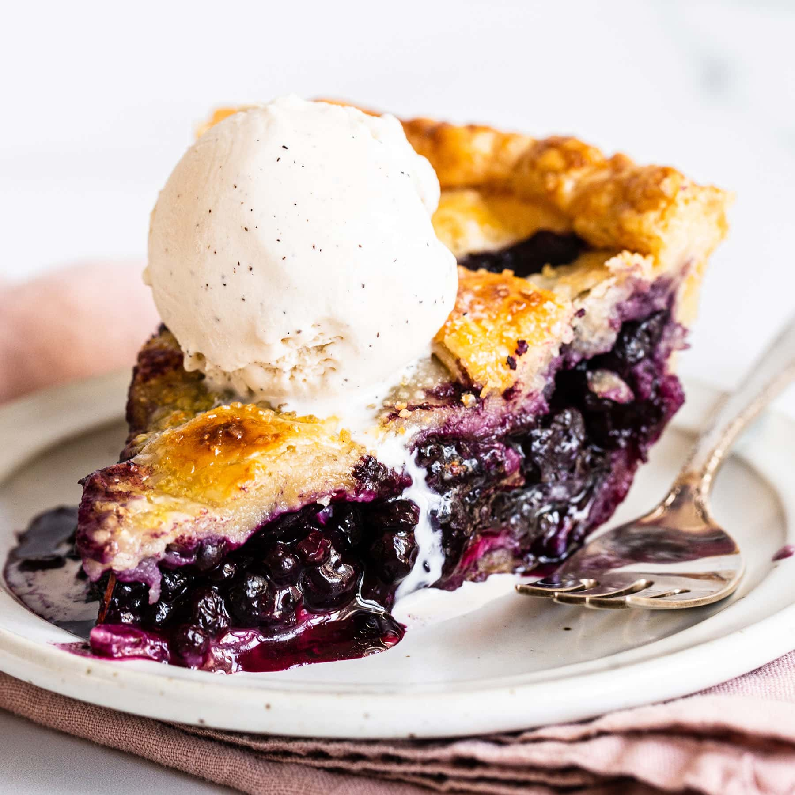

Delicious Homemade Blueberry Pie
Nothing screams "summer" quite like blueberry pie. This top-rated blueberry recipe will quickly become a seasonal staple in your home!
These are the ingredients you'll need to make this top-rated blueberry pie recipe:
- Sugar: This blueberry pie recipe starts with a cup of white sugar.
- Cornstarch: Cornstarch thickens the blueberry pie filling, preventing runniness.
- Cinnamon: Ground cinnamon adds subtle warmth.
- Salt: A pinch of salt enhances the overall flavor of the blueberry pie filling, but it won't make it taste salty.
- Blueberries: Of course, you'll need fresh blueberries! If you can't find fresh, frozen (and thawed) will work.
- Pie Crust: Use a store-bought or homemade pastry crust.
- Butter: You'll need just a tablespoon of butter.
Ingredients
- 3/4 cup white sugar
- 3 tablespoons cornstarch
- 1/2 teaspoon ground cinnamon
- 1/4 teaspoon salt
- 4 cups fresh blueberries
- 1 (14.1 ounce) package double-crust pie pastry, thawed
- 1 tablespoon butter
Directions
- Set an oven rack to the lowest position and preheat the oven to 375 degrees F (190 degrees C).
- Mix sugar, cornstarch, cinnamon, and salt together in a bowl; sprinkle over blueberries.
- Line a pie dish with one pie crust. Pour berry mixture into the crust and dot with butter. Cut remaining pastry into 1/2- to 3/4-inch-wide strips. Use the strips to weave a lattice top. Crimp and flute the edges.
- Bake pie on the lowest oven rack until filling is bubbling and crust is golden brown, about 50 minutes.